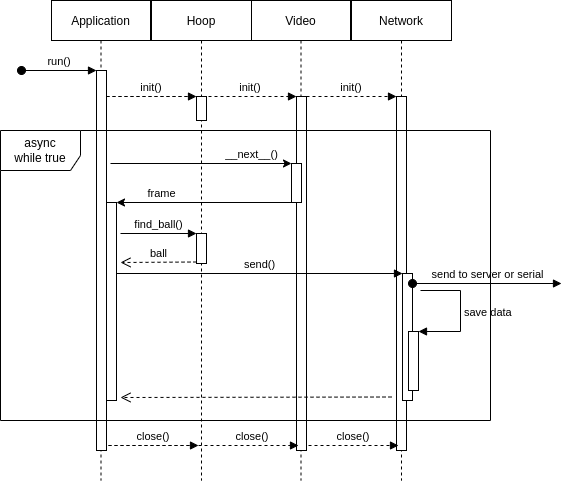

Local development and advanced debugging
Understanding the Code
To understand the code a bit better two simplified diagrams are given. Fist the UML Sequence Diagram:
{kind=link}
It all starts with the run() entry point in the Application class. This call constructs and configures all the necessary resources and starts threads as required. The network server and the retrieval of frames from the camera have their own thread, symbolised by the activity rectangle in the diagram. Each frame calculation also has its own thread, represented by the while block in the diagram.
First the frame is taken from the video object via the implicit __next__() method with an iterator. Then the worker pool dispatches a worker with the frame and the find_ball_async() method. This worker returns to the callback ball_found_async_callback() after his job is done. The frame loop does not wait for the callback but continues with the for loop through the frames.
The frame data arrays are delivered via the piHSVArray class inside Videostream.__next__() in HSV format.
Call-Graph
This can also shown in a Flow-Chart-like clickable Call-Graph (you can zoom in the website to make it bigger):
Here the full code of the diagram above for a more detailed deep dive:
def run(self, ball_hsv: dict):
"""
This method runs the main loop method for tracking and network init. Administers the thread-workers and gives
them jobs. Each core gets one thread-worker. They will calculate the results of the frames after each other.
The thread-workers are especially needed if the application is running under high per frame cpu,
which can happen with high fps or high resolution settings.
:param ball_hsv: if this parameter is set, the ball hsv in config is overwritten
:type ball_hsv: dict
"""
# saves the new colors to the config
self.save_col_and_add_from_config('ball', ball_hsv)
# give config to object constructors to initialize like defined in config
# ** does flatten the array to arguments, with their corresponding keys as argument names
hoop = Hoop(**self.get_cfg('hoop'))
video = VideoStream(**self.get_cfg('camera'))
# the network needs object context for better access in the async callback method from the workers
self.network = init_network(**self.get_cfg('network'))
# start network
with self.network:
try:
# start thread-worker pool
pool = multiprocessing.Pool(processes=os.cpu_count())
# count the number of frames, this will be important to reconstruct original frame order
i = 0
# iterate over the video frames (most likely infinitely)
for frame in video:
# increase frame counter
i = i + 1
# log the time of frame start (and delivery later)
self.timings[i] = time.time()
debug_dir_path = None
# if in debugging mode save every 30th frame in this folder for that frame
if self.verbose and i % 30 == 0:
debug_dir_path = './storage/debug/' + str(i) + "/"
os.makedirs(debug_dir_path, exist_ok=True)
# normal loop:
# send the task to the next available thread-worker, from the pool
# the threads will call hoop.find_ball(frame=frame, cols=ball_hsv, iterations=0)
# search for the ball in the frame with the given color borders
pool.apply_async(hoop.find_ball_async,
args=(i, frame, self.local_config()['ball'], debug_dir_path),
callback=self.ball_found_async_callback,
error_callback=self.ball_search_error_callback)
except KeyboardInterrupt:
# break potential infinite loop
pass
finally:
print('Closing resources, worker and so on')
video.close()
pool.terminate()
pool.close()
Local development
to be able to develope this codebase on a local (non-pi) machine you need to do some extra steps.
make sure you have a Serial port, or a deactivated serial communication (see Configuration)
make sure you have mocked video material from a pi to make your calculations on (more on that later)
If you want better code completion it is advised also to install the picamera module. Usually this is not possible, but there is a way to achieve it.
export READTHEDOCS=True
pip install picamera # should work now
Getting Mocked Video material
To record a ‘video’ there is the debug.py file, to take a video you can use the following command:
python debug.py --vid dirname 300 60 1
Where
dirname is the name of the directory in storage/faker/
300 is the amount of frames which will be collected, defaults to 10
60 is the framerate the frames will be collected, defaults to 60
1 is the resolution_no the pictures will be taken in, defaults to 1 (320x240)
To use this videos (only a lot of pictures which will be interpreted as a raw video stream) add the following config:
lyoga: # my pc hostname
# some parts omitted
camera:
faker_path: fetch/rpi3.lan/faker/runtest # loads this video directory instead of the camera (for the ball search)
# some parts omitted
hoop:
# some parts omitted
faker_path: storage/cheat2.png # one picture which will be used for the configure routine (hoop+ball once)
network:
is_server: true
serial:
active: false # has to be false if you do not have a serial com